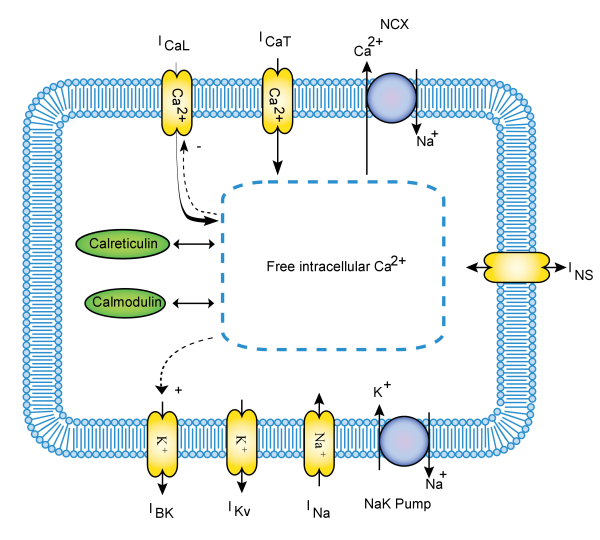

Encoded in CellML by Yong Cheng Poh
NUS Graduate School for Integrative Sciences and Engineering and Department of Bioengineering, National University of Singapore
This CellML model represents the human jejunal smooth muscle cell of the small intestine, and describes four slow waves with a 10s period. For more details, please refer to the original paper, visit Computational Bioengineering Laboratory or contact the author, Yong Cheng.
Recently, a number of ion channel mutations have been identified in the smooth muscle cells of the human jejunum. Although these are potentially significant in understanding diseases that are currently of unknown etiology, no suitable computational cell model exists to evaluate the effects of such mutations. Therefore, a biophysically based single cell model of human jejunal smooth muscle electrophysiology was developed. The resulting cellular description is able to reproduce experimentally recorded slow wave activity and produces realistic responses to a number of perturbations, providing a solid platform on which the causes of intestinal myopathies can be investigated.
|  |
| Schematic overview of the hJSMC model: It contains the ionic conductances and sub-cellular mechanisms that shape cellular electrical behaviour and intracellular Ca2+ dynamics. |
The original publication reference is cited below:
A Quantitative Model of Human Jejunal Smooth Muscle Cell Electrophysiology, Yong Cheng Poh, Alberto Corrias, Nicholas Cheng, Martin Lindsay Buist, 2012, PLoS ONE, 7(8): e42385. PubMed ID: 22912702